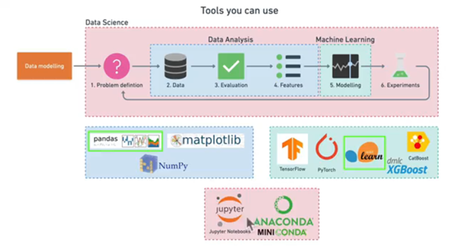

Software Design#
This project is organized into a comprehensive data science workflow consisting of six steps:

1. Problem Definition#
The goal is to predict the likelihood of a patient having heart disease using their medical data.
This problem falls under Supervised Learning with structured data and focuses on classification since we are predicting a binary outcome (presence or absence of heart disease).
2. Data Collection#
What data do we have? How does it match the problem definition? Is it structured or unstructured? Static or streaming?
The dataset used includes patient information such as age, sex, cholesterol levels, and other key medical indicators.
3. Evaluation#
What defines success?
4. Feature Engineering#
What parts of the data are we going to use for the model? How can existing knowledge influence this?
The goal here is to find out more about the data and become a subject matter export on the dataset you’re working with.
What question(s) are you trying to solve?
What kind of data do we have and how do we treat different types?
What’s missing from the data and how do you deal with it?
Where are the outliers and why should you care about them?
How can you add, change or remove features to get more out of your data?
5. Modeling and Evaluation#
Which model should you choose? How can you improve it? How do you compare it with others?
Various machine learning models were tested, including Logistic Regression, Random Forest, and XGBoost.
The models were evaluated using metrics like precision, recall, F1-score, and a detailed confusion matrix.
Cross-validation techniques were employed to ensure the model’s robustness.
GridSearchCV was used after RandomizedSearchCV for fine-tuning hyperparameters.
Logistic Regression emerged as the top performer with an accuracy score of 88%, achieved after extensive hyperparameter tuning using GridSearchCV.
6. Experimentation#
What else could be tried? Does the deployed model perform as we want?
Could I collect more data?
Could I try a better model? Like CatBoost or XGBoost?
Could I improve the current models? (beyond what we’ve done so far)
Software Design Consideration#
The project follows a machine learning pipeline design, which is commonly used in data science projects. It consists of:
Data Preprocessing: Handling missing values, encoding categorical variables, and feature scaling.
Model Selection and Tuning: Using techniques like cross-validation and hyperparameter optimization.
This systematic approach ensures that the model is well-tuned and reliable for predictions.
Explanation of Supervised Learning and Classification#
In the Problem Definition section:
Supervised Learning: The model is trained on labeled data, meaning we have input features (
X) and corresponding output labels (y).Classification: The task is to categorize patients into two groups: those with and without heart disease.
Future Work#
Explore more complex models like neural networks or implement real-time predictions.
Consider adding additional medical data for a more robust model.